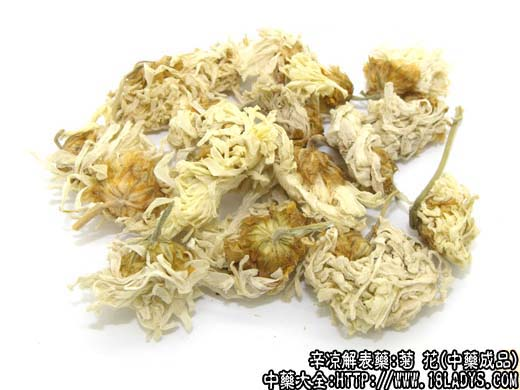
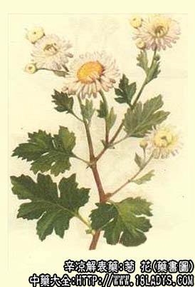

菊花为常用中药。《神农本草经》列为上品。商品根据产区的不同，分为毫菊、滁菊、贡菊、杭菊、怀菊、黄菊等数种。
别名：白菊花、甘菊花。
来源：为菊科多年生草本植物菊的干燥头状花序。栽培。
产地：全国各地均产并互有引种。
毫菊花：主产于安徽毫县，涡阳及河南商丘；
滁菊花：主产于安徽滁县；
贡菊花：（微菊）主产于安徽歙县；
杭菊花：（白茶菊）主产于浙江桐乡，海宁；
怀菊花：主产于河南沁阳，武陟；
黄菊花：（大小两种）主产于浙江、海宁；
川菊花：主产四川中江。
采收加工：11月间，当花正盛开时采收。各种菊花加工方法如下：
白菊花：系将花枝割下，捆成小扎，倒挂阴干，然后剪下花头。
滁菊花：系摘取头状花序，经硫磺熏过，晒成6成干时，用筛子筛，使成圆球形，再晒干。
贡菊花：系摘下花后用火烘干。
杭菊、大黄菊：系摘下花后，上蒸笼蒸过晒干；小黄菊则用火烘干。
性状鉴别：头状花序，外层花瓣（舌状花）多呈扁平单片状。中间有黄色的圆盘状花心（多数管状花聚合而成）基部有绿色花蒂，由3~4层叶状物（总苞片）组成。气清香，味甘微苦。由于产区和加工方法不同（实际品种不一），各地产品略有差异。
1、毫菊花：花大足壮，花瓣长而紧密，长约1~2厘米。将花冠捋齐与蒂粗细相等。色白。
2、滁菊花：形状与毫菊类似，惟花朵较小。多皱缩呈绒球状，花心较松。
3、贡菊花：花朵小，花瓣密而短，色白。蒂绿而鲜艳，花心金黄色。
4、杭菊花：因加工蒸过而呈压迭状。朵大瓣阔而疏，色白微黄，花心较大，深黄色。蒸过的大黄菊与其相似，只瓣为黄色。
5、怀菊花和川菊花：花大瓣长。约1~2厘米，多为黄白色，带有浅红色或棕红花的花瓣。花心细小，浅棕色，质松而柔软。
6、小黄菊（烘黄菊）：为黄菊花小的头状花序或未开放的花蕾。
白菊花均以白色，花完整，不散瓣，香气浓，无梗叶者为佳。黄菊花则以色黄者为佳。
主要成分：含腺嘌呤、水苏硷、胆硷等，并含挥发油。
功效与作用：疏风散热、解毒、明目、其原理为：
1、消炎，利尿。
2、抗菌。杭菊花在体外对金黄色葡萄球菌、B溶血性链球菌、宋内氏痢疾杆菌、伤寒杆菌等有抑制作用。
此外：白菊花在体外对色毛癣菌等多种皮肤真菌，有不同种度的抑制作用。
炮制：生用或炒炭。
性味：甘、苦、微寒。
归经：入肺、肝经。
功能：疏风除热，清肝明目。
主治：头目风热，眩晕，头痛目赤等症。
临床应用：各种菊花都有不同程度的清散风热、解热、解毒（消炎）、明目等作用，但各有所长。
甘菊花（白菊花）养肝明目的功效较好，常用于肝肾阴虚引起的目暗。滁菊花为白菊花的一种，功用相同，其品质较优，镇痛镇静的作用较好。
杭菊花（黄菊花）疏散风热的能力较好，常用于外感风热，头痛、目赤。
野菊花清热解毒的能力较强，擅长治疗疔疮肿毒（详见下条）。
2、用于治风热眼痛（结膜炎）。杭菊花配白蒺藜、木贼，水煎服，也可用其热蒸气熏眼。
3、用于治肝阳上亢引起的头痛（相当于高血压病早期的头痛）。甘菊花配夏枯草，钩藤等。
4、用于治肝肾不足（如慢性肝炎、视神经炎时）引起的头晕眼花。甘菊花配杞子，方如杞菊地黄丸（汤）。
用量：3～18g。
处方举例：杞菊地黄汤（《医级》）：杞子12g，甘菊花9g，熟地15g，茯苓9g，淮山12g，泽泻9g，山萸肉9g，丹皮6g，水煎服。
注：上述几种菊花，均为药用之甘菊，但以毫菊，怀菊为主，习惯认为毫菊优于怀菊。杭菊：原为茶行经营，多做茶用，故名茶菊。滁菊：香气浓郁而幽雅，为菊花中之珍品（过去多在加工时洒上绿豆粉）。贡菊：京津及福均称之“滁菊”，京多做茶用。黄菊：京津习用大黄菊。在应用上各随大夫处方。在功效上，疏风散热多用杭菊、黄菊；平肝明目，多用白菊滁菊（贡菊）。